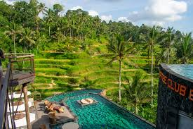
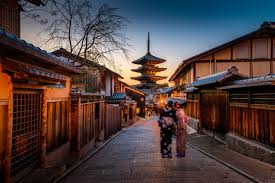
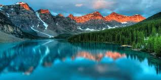
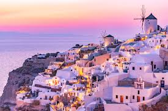
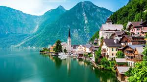
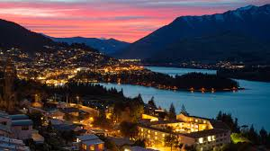
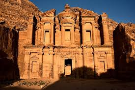

 1. Ubud, Bali - Indonesia Ubud dikenal sebagai pusat seni dan ketenangan di Bali. Dikelilingi sawah berundak, hutan, dan sungai yang jernih, Ubud menawarkan suasana yang ideal untuk melepas penat. Selain itu, kamu bisa menikmati pijat tradisional Bali, mengunjungi Monkey Forest, dan menyaksikan pertunjukan tari budaya yang autentik.
 2. Kyoto–Jepang Sebagai bekas ibu kota Jepang, Kyoto memiliki ratusan kuil Buddha, taman zen, dan situs budaya yang telah ada selama berabad-abad. Hutan bambu Arashiyama dan kuil emas Kinkaku-ji adalah spot favorit wisatawan. Pada musim semi, kota ini menjadi indah dengan bunga sakura yang bermekaran.
 3. Banff-Kanada Banff National Park adalah surga bagi pencinta alam dengan danau-danau berwarna turquoise seperti Lake Louise dan Moraine Lake. Kamu bisa hiking di pegunungan Rockies, menjelajahi gua es, atau bersantai di pemandian air panas alami yang dikelilingi salju.
 4. Santorini-Yunani Pulau ikonik ini terkenal dengan bangunan putih-biru yang kontras dengan birunya Laut Aegea. Pemandangan sunset di desa Oia menjadi salah satu yang terbaik di dunia. Santorini juga kaya sejarah dengan reruntuhan kuno dan museum arkeologi.
5. Cape Town - Afrika Selatan Cape Town memiliki keindahan yang unik: Gunung Table yang menjulang di tengah kota, pantai-pantai berpasir putih, serta kebun anggur kelas dunia. Kota ini juga kaya budaya, terlihat dari kawasan Bo-Kaap yang penuh warna dan kisah sejarah yang mendalam.
 6. Hallstatt-Austria Terletak di tepi danau di kaki Pegunungan Alpen, Hallstatt menawarkan pemandangan indah yang terlihat seperti lukisan. Desa ini kaya akan sejarah tambang garam dan arsitektur klasik Eropa yang memesona, ideal untuk wisata santai dan fotografi.
7. Machu Picchu-Peru Terletak di pegunungan Andes, Machu Picchu adalah situs warisan dunia UNESCO yang menawarkan pengalaman spiritual dan petualangan arkeologi. Reruntuhan ini menunjukkan kejayaan arsitektur Suku Inca dan menjadi magnet bagi para pencinta sejarah dan alam.
 8. Queenstown - Selandia Baru Kota ini dikenal sebagai ibu kota petualangan dunia. Kamu bisa mencoba aktivitas ekstrem seperti bungee jumping, jet boating, hingga paragliding. Di sisi lain, Queenstown juga menawarkan danau tenang dan pemandangan pegunungan yang spektakuler.
 9. Petra-Yordania Petra merupakan kota kuno yang dipahat di dinding batu merah. Situs ini menawarkan lorong-lorong sempit, kuil megah seperti Al-Khazneh (The Treasury), dan sejarah peradaban Nabatean yang mengagumkan, menjadikannya salah satu keajaiban dunia.
10. Raja Ampat-Indonesia Terletak di Papua Barat, Raja Ampat adalah surga tersembunyi bagi para penyelam. Dengan terumbu karang yang sehat dan biodiversitas laut tertinggi di dunia, tempat ini cocok untuk pencinta alam bawah laut dan ekowisata sejati.